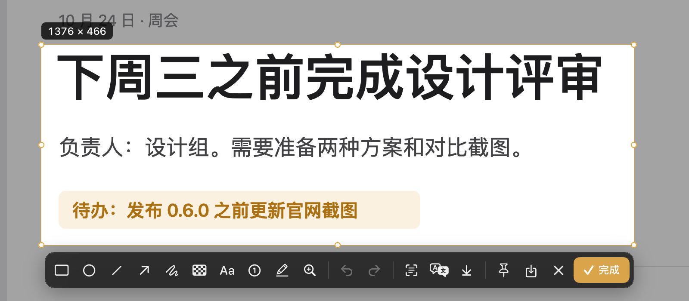

12 种标注工具
矩形、椭圆、直线、箭头、画笔、马赛克、模糊、文字、便签、高亮、放大镜和序号。已有标注可以移动和缩放，文字直接在画布上编辑。
右下角的缩略图可以拖出文件、继续编辑或贴到屏幕上。

拖动框选，按 A 画箭头，Return 确认。
示例图只在浏览器里编辑，不读取你的屏幕。
按 ⇧⌘A 框选区域，也可以截取窗口或整个屏幕。按 Return 完成，图片直接进入剪贴板。
矩形、椭圆、直线、箭头、画笔、马赛克、模糊、文字、便签、高亮、放大镜和序号。已有标注可以移动和缩放，文字直接在画布上编辑。
右下角的缩略图可以拖出文件、继续编辑或贴到屏幕上。

截图可以贴在屏幕最上层；历史记录可以按识别出的文字搜索。支持快捷指令、URL scheme 和命令行。
截图后点「长截图」，然后正常滚动。niko-shot 边滚边拼接，旁边的预览实时显示拼好的长图。
按 Return 或点「完成」结束。也可以自动滚动，到底后自动完成；固定的顶栏和底栏只保留一份。
查看长截图预览录制区域、窗口或整个屏幕，可以暂停后继续。可以录系统声音、麦克风和摄像头画中画，导出 MP4 或 GIF。
查看录屏设置文字识别用 Apple Vision 在本机完成，支持中文、英文和日文。翻译可以接入下面五类服务，在 设置 → 翻译 中配置，密钥保存在系统钥匙串。
查看各服务的申请步骤官方文档核对日期：2026-10-13，与应用内指南一致。
当前版本的窗口截图，跟随本页的浅色或深色外观。

新安装只注册 ⇧⌘A 一个全局快捷键，其他操作都在菜单栏菜单里，可以在 设置 → 快捷键 中自行指定。和其他应用冲突时，选中快捷键按 Delete 或点 ✕ 即可移除；升级用户保留原有快捷键。
全部快捷键截图、录屏和文字识别都在 Mac 本机完成，历史记录只保存在本机。只有翻译会把选中的文字发送到你配置的服务；自动翻译可以在 设置 → 翻译 中关闭。
密钥和翻译请求说明需要 macOS 14 或更新版本。M 芯片和 Intel 各有独立的安装包。
截图和录屏需要「屏幕录制」。长截图自动滚动需要「辅助功能」；录屏时打开麦克风或摄像头才会请求对应权限。niko-shot 不申请输入监控权限。
不需要。从 0.3.0 起，正式版一直用同一张证书签名，macOS 会保留已有授权。安装包未经 Apple 公证，第一次打开下载的应用时系统会询问一次。
在 设置 → 快捷键 中选中它，按 Delete 或点 ✕ 移除，也可以换一个组合。
需要。niko-shot 不附带共享密钥，请求直接发到你配置的服务。申请步骤见 翻译接入指南；没有开启认证的自建 LibreTranslate 不需要密钥。
可以。URL scheme 链接只会打开需要你操作的界面，不会静默截图。命令行静默截图默认关闭，需要在 设置 → 通用 中打开「允许命令行静默截图」。
M 芯片的 Mac 下载 arm64，Intel 的 Mac 下载 x86_64，每种都有 DMG 和 ZIP。校验文件和更新记录在同一个发布页。
在 GitHub Issues 提交问题，请附上系统版本和复现步骤。构建需要 Xcode 和 XcodeGen，见 README。